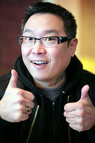

DAVID CHOE –
WORSHIPFUL MASTER

Daylight�s 2009-2010 Worshipful Master David Choe
is an artist of many different talents. In his trade as a tattoo
artist he proves that his lodge is a real Lodge of the Arts, all
kinds of arts. He is well grounded in other arts forms.
He is an outstanding photographer and provides most of the
photographs for Daylight�s web site and Trestleboard.
He is an accomplished water color artist, a talent that in
part relates to his trade as a tattoo artist.
More than one Mason sports a
David Choe tattoo.
He has had several exhibits of his photographs in different
venues, a recent showing of watercolors was a sold out success.
He was born in Seoul, South Korea December 4,
1971 but raised in the United States.
He became a proud American citizen on
July 4, 2006.
His early years were spent in Queens, New York, later in
Minneapolis/St. Paul. He
moved to Seattle in 1999.
He is one of the many members who made their
first contact with the lodge through this web site. From it he
developed an interest in Masonry and in early fall 2003 he contacted
the lodge. The members
who met him were immediately impressed with him and his sincerity.
The results were he started his Masonic journey in November
2003 and was made a Master Mason on February 21, 2004. He promptly
became a very active and involved member; appointed as Chaplain for
two years before becoming Senior Deacon in 2006-2007.
Elected Junior Warden for 2007-2008, on July 21, 2007 he
became one of the three principal officers.
When he was installed as the first Asian-American elected to
office in Daylight Lodge, it was a date and occasion to remember for
he was installed into that office by Past Grand Master MW Sat
Tashiro, the first Asian-American to hold that office in the Grand
Lodge of Washington.
That was proud moment in Daylight Lodge and it was to continue when
Grand Master Gale H. Kenney installed him as the 2009-2010 Master on
July 11th, 2009.
With his many talents he was soon recognized as
an important part of Daylight, a definite leader of the Lodge.
The Grand Lodge also recognized his photographic abilities
when Grand Master Douglas Tucker 2008-2009 appointed him to be one
of three Grand Photographers.
He continues as one of the Grand Photographers for the
2009-2010 Masonic Year. He is also a member the York Rite Bodies,
Scottish Rite and Shrine but considers Blue Lodge as his top
priority.
Email:
worshipfulmaster@daylightmasons.org